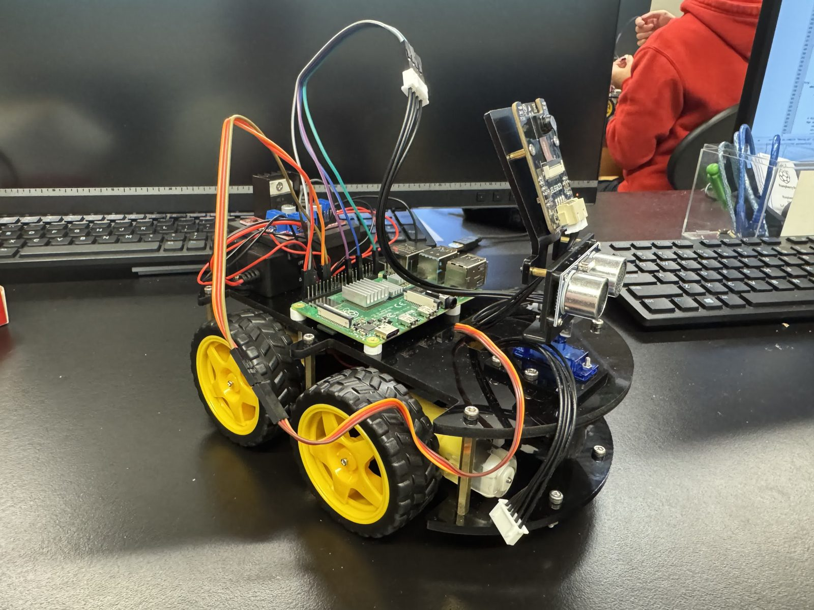
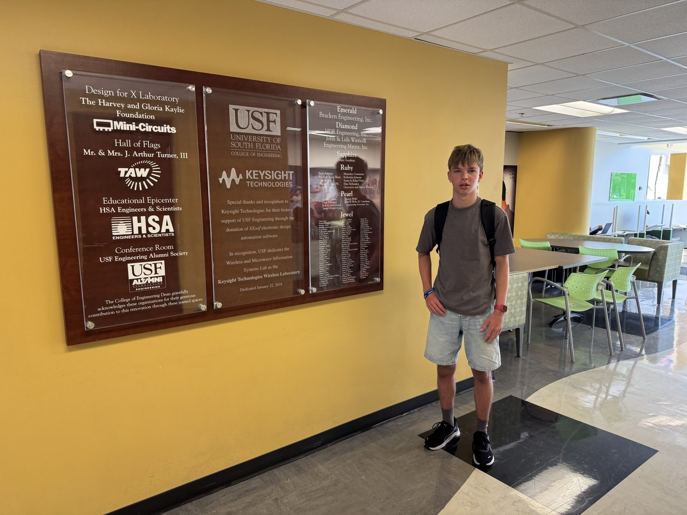
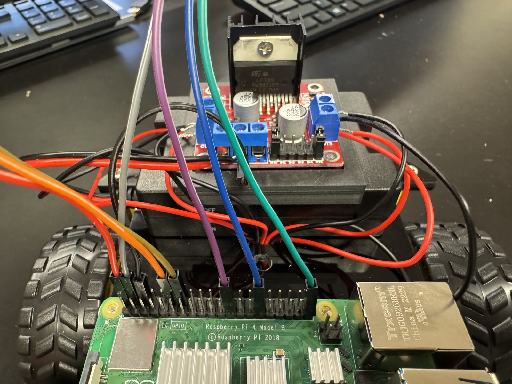
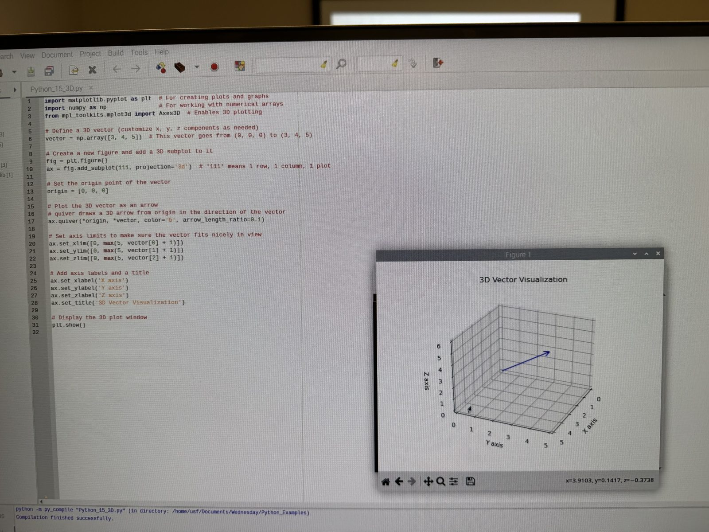
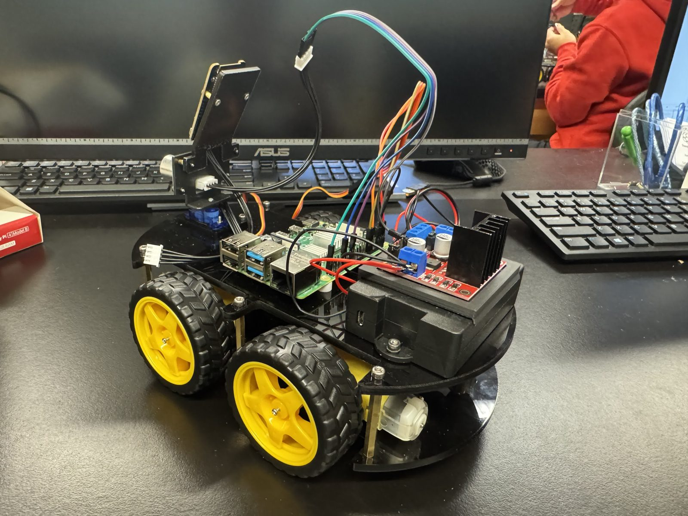
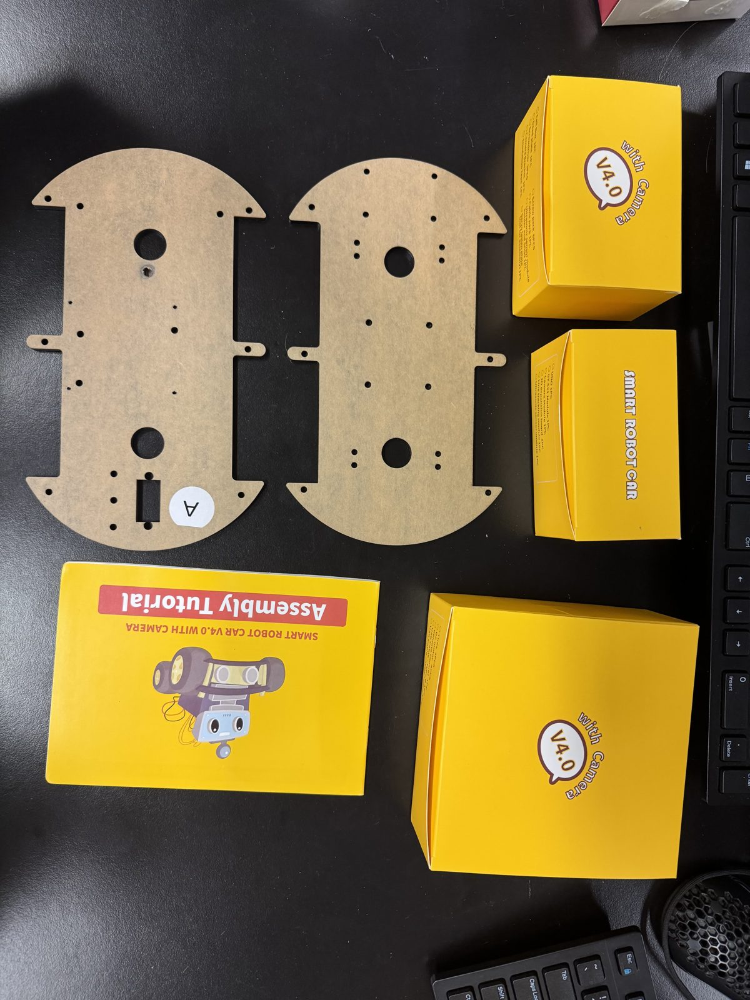
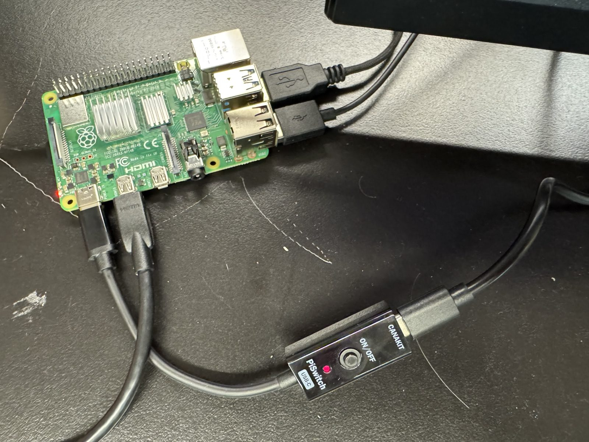

Small cars. Big ideas.
Exploring how robots can sense their surroundings and eventually communicate.
← All projects
Vehicles that coordinate.
Could small vehicles sense their surroundings and eventually coordinate to avoid conflicts?
Build toward it.
The first robot is navigating around obstacles. Building a second robot and testing communication are the next parts of the experiment.
First, navigate.
One Raspberry Pi robot is operational as an obstacle-avoiding robot. It scans its surroundings and turns toward the side with more clearance.
Next, communicate.
The goal is two robots coordinating over Wi-Fi. The second robot and vehicle-to-vehicle communication are still in progress.
Why build it?
The project grew from an interest in how communicating vehicles might help prevent intersection collisions. The goal is to explore that idea at small scale, while learning how sensing, navigation, and wireless communication fit together.
What comes next
The repository describes a planned UDP-based exchange of position and obstacle information. Robot 1 can avoid obstacles today; the second robot is partially assembled, and coordinated navigation remains a future goal.
An idea from summer robotics.
CarComms grew out of my experience at a summer robotics program. This video captures that program and some of the hands-on work that helped inspire the project.
Talking about the ideas.
In this video, I talk about projects including CarComms.
From parts to robot
Swipe or scroll sideways to see more.






